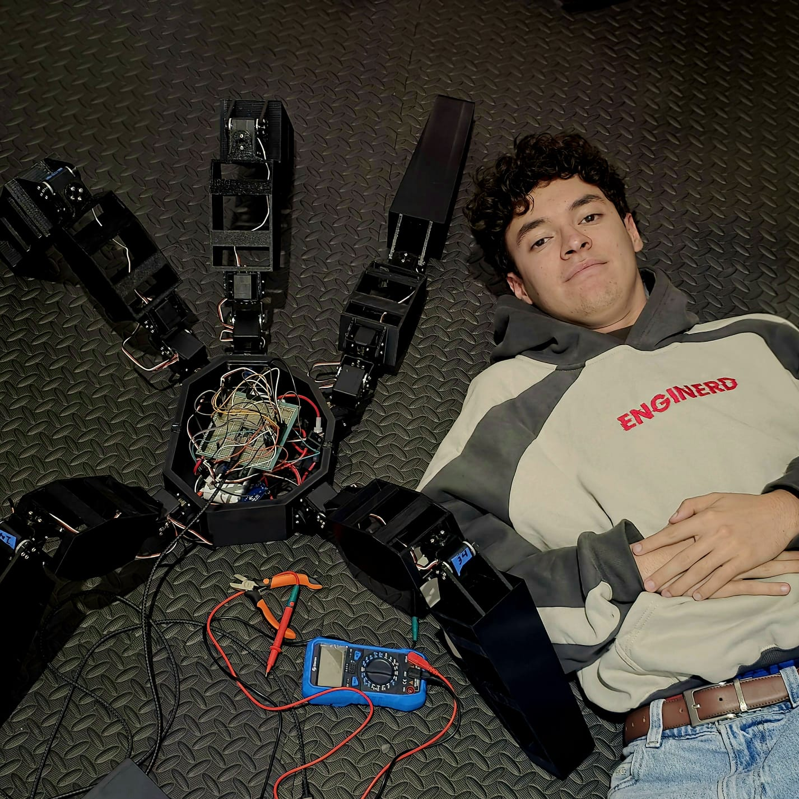

Embedded systems
Microcontrollers, digital logic, and the software that connects hardware to the world.
ROBOTICS & TELECOMMUNICATIONS ENGINEERING
I’m interested in the space where embedded systems, robotics, and simulation meet—building, testing, and learning one project at a time.
Based in Mexico Open to learning and collaboration
01 / ABOUT
A robotics and telecommunications engineering student drawn to hands-on systems and thoughtful experiments.
My projects range from a 3D-printable pentapod robot to embedded hardware prototypes and research into physics simulation. I enjoy working across mechanical design, electronics, and software—and sharing what I learn along the way.
More on GitHub02 / AREAS OF INTEREST
Microcontrollers, digital logic, and the software that connects hardware to the world.
Robot design, motion planning, and the control systems that bring mechanisms to life.
Using simulation to study how virtual robot behavior compares with mathematical models.
03 / SELECTED PROJECTS
A few projects that reflect my interest in robotics, embedded hardware, and simulation.

PROJECT 01 MOST ADVANCEDA custom, 3D-printable pentapod built around Feetech STS3215 smart serial bus servos. The repository includes editable SolidWorks parts and assemblies alongside print-ready mesh exports.
Research evaluating Unreal Engine 5 physics as a simulation environment for differential-drive mobile robots, comparing controlled movement tests with theoretical models.
A hardware proof of concept combining a DE10-Lite FPGA and ESP32 devices to monitor heart-rate input and send alerts over an ESP-NOW guardian link. This is a prototype, not a medical device.
04 / RESUME
Resume PDF · Luis Alexis Calvillo Deveze Download a copy
05 / SAY HELLO
Have a question about a project or want to connect? Find me on GitHub.
Connect on GitHub